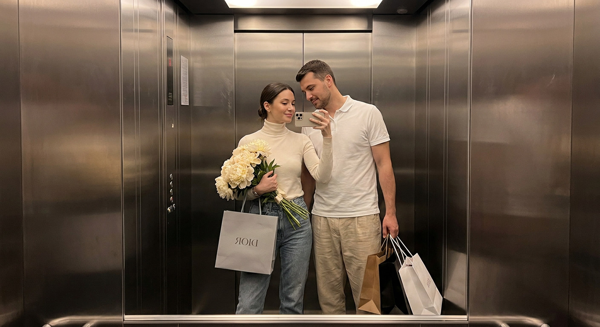
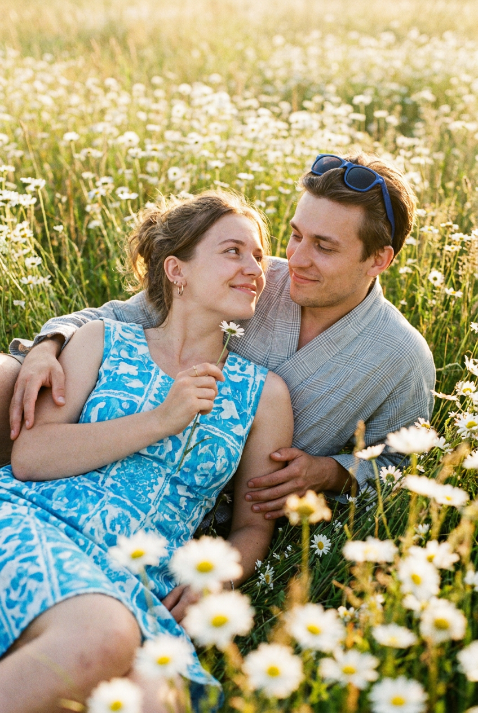
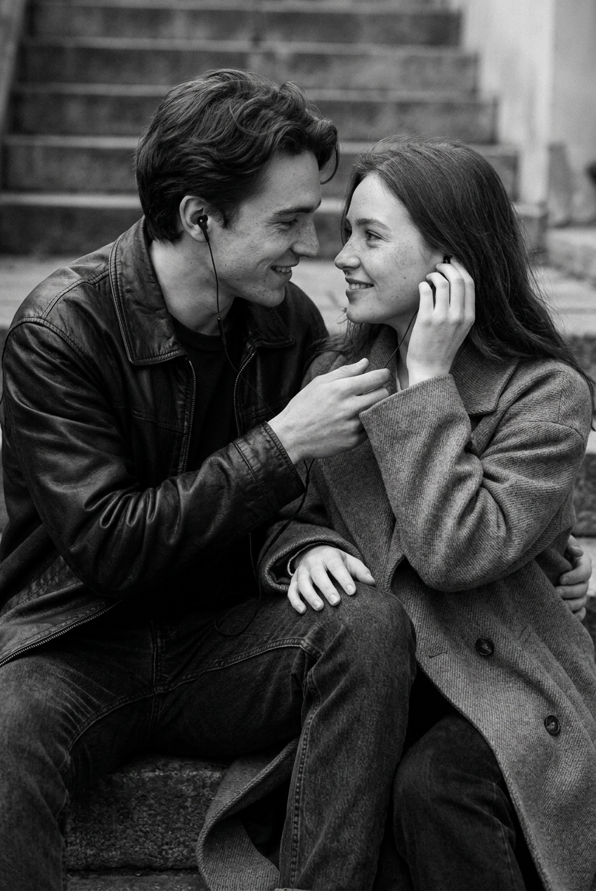
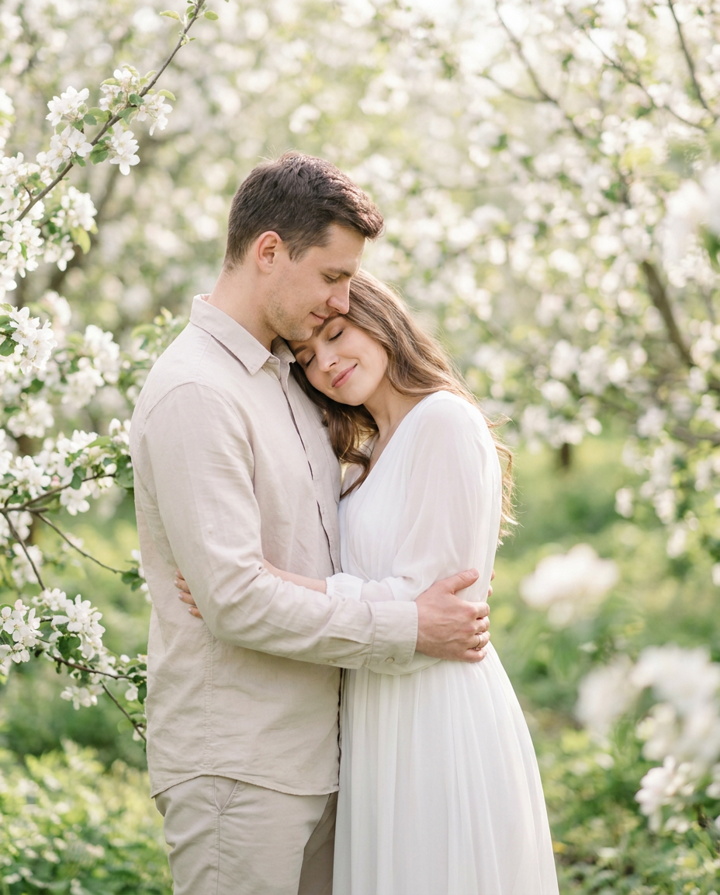
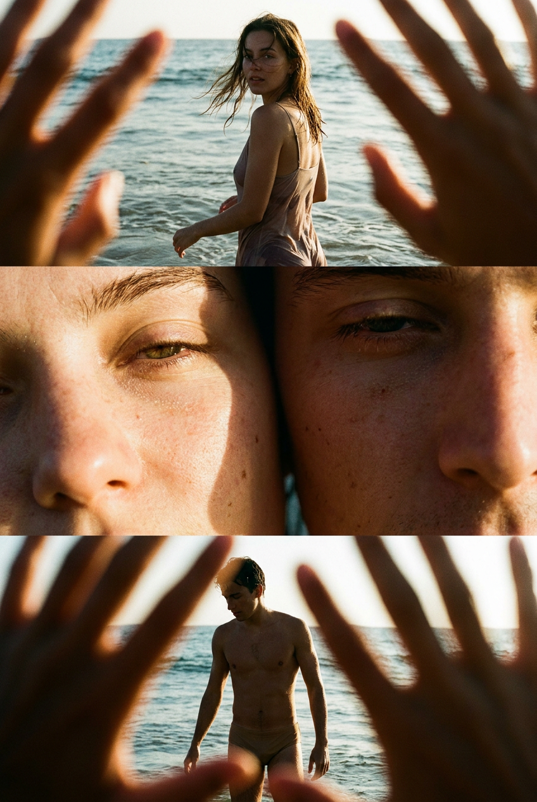
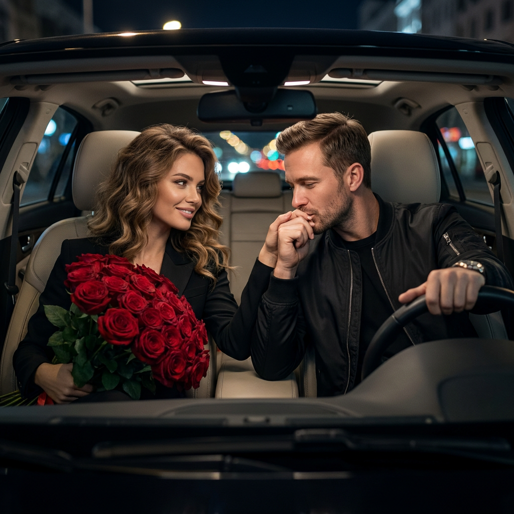
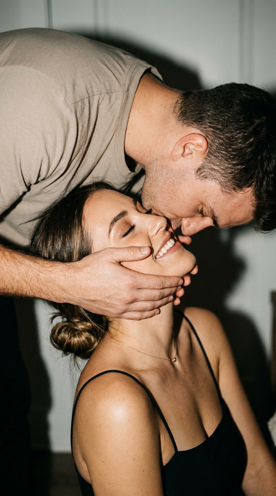
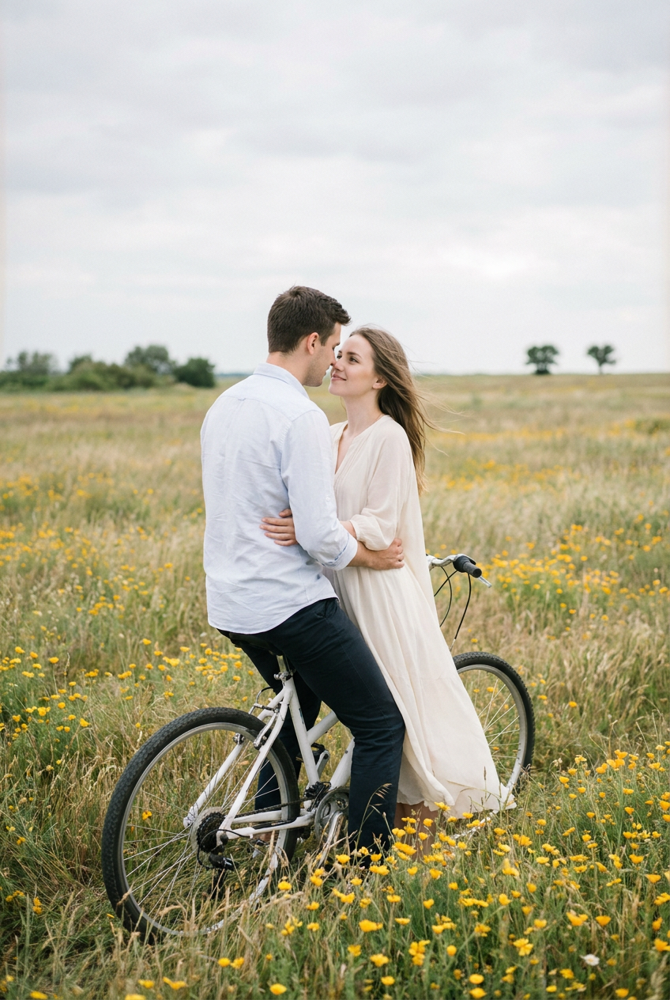
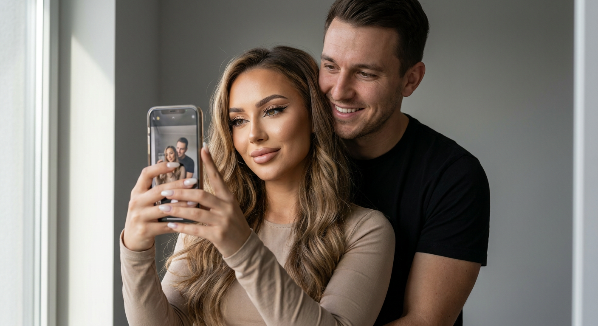
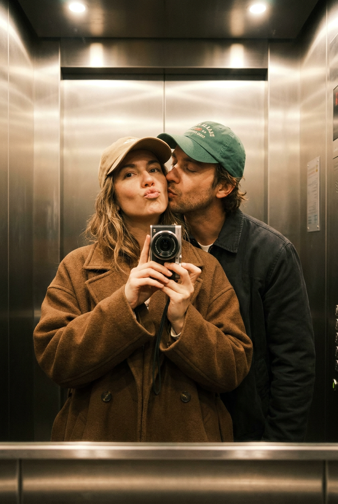

Парные ИИ-фото: 10 промптов для нейросети

Снять красивое фото вдвоём бывает сложнее, чем кажется: мешают случайный фон, неудачный свет, скованная поза и отсутствие фотографа. Генерация помогает заранее задать сцену, настроение и композицию, а затем получить несколько вариантов без долгой фотосессии.
В подборке — десять сценариев для парных ИИ-фото: селфи в лифте, объятия в поле, общие наушники на ступенях, поездка на велосипеде, ночной автомобиль и камерные поцелуи. Промпты можно использовать как основу и дополнять референсами лиц.
Как сгенерировать такое фото: пошагово
Нужен снимок анфас при ровном свете, лицо в кадре целиком, без тёмных очков и головных уборов. Разрешение от 1000 пикселей по короткой стороне. Чем чётче исходник, тем точнее модель повторит черты.
Выберите сценарий ниже и нажмите «Копировать» — текст уйдёт в буфер целиком, вместе с командой сохранения внешности. Эта команда стоит первой строкой и отвечает за то, чтобы на выходе было ваше лицо, а не случайное.
Кнопка «Сгенерировать» рядом с каждым промптом открывает модель в новой вкладке. Nano Banana Pro работает с референсом лица — в отличие от моделей, которые генерируют портрет с нуля и узнаваемость теряют.
Промпт — в поле ввода, портрет — через загрузку референса. Порядок значения не имеет, но без референса команда сохранения внешности работать не будет: модели нечего сохранять.
Для сторис и ленты берите 9:16, для превью и обложек — 4:3. Первый результат редко идеален: если поза или свет ушли не туда, поправьте соответствующую часть промпта и запустите заново. Обычно хватает двух-трёх итераций.
10 промптов для генерации
1. Селфи в лифте с покупками
Строго сохранить внешность по загруженному референсу: черты лица, пропорции, мимику и текстуру кожи без изменений. Фотореалистичное вертикальное mirror selfie внутри лифта, полный рост пары почти от головы до ног, отражение строго в центре композиции. Женщина стоит ближе к зеркалу и держит смартфон перед собой, направляя камеру на отражение; в другой руке у неё большой букет и несколько пакетов с покупками. Мужчина справа слегка наклоняет голову к спутнице, смотрит на неё и тоже держит пакеты. Лица и индивидуальные черты обоих должны оставаться узнаваемыми. У обоих ровная матовая кожа, мягкий искусственный свет без жёстких бликов. Макияж женщины минималистичный: серо-бежевые тени на верхнем веке, тонкая глубокая коричневая линия по ресничному краю, тёмно-коричневые ресницы, приглушённые нюдово-розовые губы. Естественные руки, правильные пальцы, реалистичные отражения и пропорции.
2. Нежность в ромашковом поле

Строго сохранить внешность по загруженному референсу: черты лица, пропорции, мимику и текстуру кожи без изменений. Реалистичная кинематографичная фотография пары, лежащей на траве среди густого поля ромашек и белых маргариток. Мужчина расположен справа и немного выше по диагонали, его голова хорошо видна; он обнимает женщину за плечи или талию и выглядит спокойно, с лёгкой улыбкой. Женщина лежит слева, её лицо ближе к объективу, она смотрит на мужчину с мягкой эмоцией и тихой улыбкой. Они тесно прижаты друг к другу, сцена передаёт тепло и доверие. Женщина держит маленький цветок или стебелёк, руки обоих выглядят естественно. На мужчине светло-серый клетчатый или полосатый плед-накидка с пуговицами либо кнопками. Съёмка на улице в солнечный день, тёплый летний film look, натуральная кожа, мягкое боке, лёгкое зерно, много размытых полевых цветов на переднем плане, высокая детализация лиц и кистей.
3. Музыка на каменных ступенях

Строго сохранить внешность по загруженному референсу: черты лица, пропорции, мимику и текстуру кожи без изменений. Ультрадетализированный чёрно-белый интимный портрет молодой пары на уличных каменных ступенях. Средний крупный план, камера немного сбоку на уровне глаз, резкость сосредоточена на лицах, задний план мягко растворяется в размытии. Герои сидят вплотную, колени развёрнуты навстречу. Они слушают музыку через одни проводные наушники: каждый держит один наушник, соединённый общим кабелем, их руки лежат рядом и почти соприкасаются. Женщина чуть поднимает руку к уху, мужчина мягко наклоняется вперёд. Они смотрят друг на друга, улыбаются искренне и едва заметно; в выражениях — доверие, нежность и спокойная близость. На мужчине слегка оверсайзовая чёрная кожаная куртка и тёмные расслабленные брюки. Натуральная текстура кожи, выразительный светотеневой рисунок, документальная атмосфера случайно пойманного момента.
4. Объятие под яблонями

Строго сохранить внешность по загруженному референсу: черты лица, пропорции, мимику и текстуру кожи без изменений. Вертикальная фотореалистичная фотография романтичной пары среди цветущих яблонь, в эстетике love story или editorial для помолвки. Герои стоят очень близко: мужчина обнимает женщину сзади или сбоку, одной рукой удерживает её за талию либо плечо, второй касается рук или спины. Женщина слегка прислоняется к нему, её глаза закрыты, на лице спокойная улыбка и ощущение счастья. Лбы или виски могут легко соприкасаться. Поза естественная, тёплая, интимная, без театральной постановки. Женщина одета в лёгкое белое воздушное платье свободного минималистичного кроя. Цветущие ветви яблони окружают пару, мягкий дневной свет проходит сквозь лепестки и создаёт деликатные блики. Сохранить узнаваемые лица, форму глаз, бровей, носа, губ, скул и пропорции без изменений; натуральная кожа, реалистичные руки, малая глубина резкости.
5. Триптих у океана

Строго сохранить внешность по загруженному референсу: черты лица, пропорции, мимику и текстуру кожи без изменений. Кинематографичный аналоговый триптих: три горизонтальных кадра, расположенных вертикально, все выглядят как фрагменты одного реального момента. Общая эстетика — необработанная плёнка, тёплые оттенки с заметным контрастом, зернистость, лёгкое размытие и естественные несовершенства, без постановочной симметрии. Верхний кадр снят сквозь руки очень близко к объективу: пальцы не видны целиком, края рук обрезаны рамкой, остаются только фрагменты костяшек и боковых поверхностей, образующие неровное органичное отверстие; руки сильно размыты и тёплые. В среднем плане молодая женщина стоит в неглубокой океанской воде, корпус естественно повёрнут в сторону, она оглядывается через плечо, волосы развеваются на ветру. Два следующих кадра продолжают тот же пляжный момент и сохраняют единую плёночную цветокоррекцию, живую случайность и мягкую кинематографичную атмосферу.
6. Поцелуй руки в автомобиле

Строго сохранить внешность по загруженному референсу: черты лица, пропорции, мимику и текстуру кожи без изменений. Квадратный кинематографичный кадр внутри современного автомобиля ночью. Мужчина и женщина сидят на передних сиденьях, их лица освещены мягким светом салона, создающим уютную камерную атмосферу. Мужчина стильный, с лёгкой щетиной и аккуратной укладкой, на нём чёрный бомбер, на запястье лаконичные дорогие часы; он нежно целует руку спутницы, показывая заботу и романтическую близость. Женщина смотрит на него с любовью и едва заметной улыбкой. У неё объёмная укладка мягкими волнами и чёрный идеально скроенный блейзер. В руках она держит огромный букет пышных тёмно-красных роз глубокого бордового оттенка, бархатистые лепестки становятся главным цветовым акцентом. На фоне — ночные огни за окнами, мягкие отражения на стекле и приборной панели, без лишних деталей; реалистичная кожа, естественные руки, высокая детализация.
7. Поцелуй с жёсткой вспышкой

Строго сохранить внешность по загруженному референсу: черты лица, пропорции, мимику и текстуру кожи без изменений. Интимный портрет влюблённой пары, вертикальное соотношение 9:16, близкая съёмка сбоку с лёгким ракурсом снизу вверх. Мужчина наклоняется сверху и нежно целует женщину, обеими руками ласково удерживает её лицо. Женщина улыбается с закрытыми глазами, немного откидывает голову и выглядит расслабленной, доверчивой, наполненной теплом. В фокусе лица, фон растворён в мягком размытии, глубина резкости небольшая. На мужчине простая футболка с короткими рукавами нейтрального оттенка. Женщина в чёрном топе на тонких бретелях, волосы собраны в низкий небрежный пучок, несколько прядей выбились у лица; на шее тонкая цепочка. Макияж естественный и аккуратный, акцент на выразительных глазах и натуральной текстуре кожи. Свет от накамерной вспышки жёсткий, высококонтрастный, с глубокими выразительными тенями и заметным эффектом случайного ночного снимка.
8. Объятия на белом велосипеде

Строго сохранить внешность по загруженному референсу: черты лица, пропорции, мимику и текстуру кожи без изменений. Вертикальная реалистичная кинематографичная фотография пары в поле с высокой травой и множеством мелких жёлтых цветов, стилистика film look, мягкая ретро-цветокоррекция, натуральная кожа, тонкое плёночное зерно и небольшая виньетка. Пара стоит или медленно едет на белом велосипеде. Мужчина находится слева и чуть позади, сидит либо удерживает велосипед и разворачивает корпус к женщине. На нём светло-голубая или белёсая рубашка с длинными рукавами, рукава лежат естественно или слегка собраны. Женщина тесно прижата к нему, обнимает руками, смотрит вверх и в сторону его лица с нежным спокойным выражением. Мужчина поддерживает её на уровне талии или спины. Их лица находятся близко, момент похож на шёпот или почти поцелуй. Высокая трава и жёлтые полевые цветы мягко размыты на переднем и заднем плане, свет тёплый, дневной, поза естественная.
9. Уютное селфи в зеркале

Строго сохранить внешность по загруженному референсу: черты лица, пропорции, мимику и текстуру кожи без изменений. Гиперреалистичное зеркало-селфи пары на фоне однотонной серой стены. Девушка с длинными волнистыми волосами держит iPhone, а мужчина в чёрной футболке обнимает её сзади и улыбается; композиция выглядит домашней, непринуждённой и тёплой. На девушке бежевый лонгслив. Макияж детально проработан: графичные стрелки, длинные объёмные ресницы, нюдовые губы с мягким финишем и аккуратный хайлайтер на скулах. На руках, держащих телефон, молочный маникюр. Мягкий естественный свет создаёт объём и деликатные тени, фон не отвлекает от лиц. Фотореализм, высокая детализация, натуральная кожа, точные пропорции кистей и отражения. Камера Phase One IQ4, объектив 80 мм, диафрагма f/2.8–f/4: оба лица резкие, фон слегка отделён глубиной резкости. Разрешение 8K, без лишних предметов и искажений зеркала.
10. Игривый поцелуй в лифте

Строго сохранить внешность по загруженному референсу: черты лица, пропорции, мимику и текстуру кожи без изменений. Вертикальная постановочная фотография в формате playful mirror selfie внутри лифта. Камера находится на уровне груди, в зеркальном отражении виден компактный цифровой фотоаппарат, которым сделан снимок. Женщина стоит перед зеркалом под лёгким углом и держит камеру одной рукой. Позади неё мужчина наклоняется вперёд и целует её в щёку; его жест выглядит спонтанным и нежным. Женщина отвечает игривым слегка капризным pout-выражением, атмосфера — повседневное счастье и непринуждённая близость. На ней объёмное коричневое шерстяное пальто поверх тёмного топа, светло-бежевая бейсболка и естественный макияж с мягким оттенком губ. Мужчина одет просто и современно, его поза не закрывает лицо спутницы. Металлические стены лифта дают правдоподобные отражения, мягкий верхний свет подчёркивает фактуру пальто, сохранить реальные пропорции, руки и детали камеры.
Что важно учесть в этом стиле
Парное ИИ-фото держится не только на лицах, но и на контакте между героями. В промпте лучше прямо описать, кто где стоит, куда направлен взгляд, какая рука касается партнёра и что происходит с предметами в кадре. Так нейросети проще собрать убедительную сцену.
Для фотореализма задавайте тип света, фокусное расстояние, глубину резкости и характер обработки: плёнка, вспышка, мягкий дневной свет или ночное освещение салона. Отдельно просите аккуратные кисти, пять пальцев и естественные отражения — именно эти детали чаще всего выдают генерацию.
Идеи для вариаций
- Перенесите сцену с ромашкового поля на берег озера или в осенний парк.
- Замените букет роз на тюльпаны, ветки эвкалипта или полевые цветы.
- Сделайте триптих из поездки в поезде, прогулки под дождём или вечера на кухне.
- Поменяйте проводные наушники на один виниловый проигрыватель и общую пластинку.
- Для селфи в лифте добавьте спортивные образы, вечерние наряды или винтажную вспышку.
Как собрать свой промпт
Сначала укажите формат и жанр: вертикальный портрет, квадратный кадр, плёночная фотография или зеркало-селфи. Затем опишите локацию и расставьте героев в пространстве. Формулировки вроде «женщина ближе к объективу, мужчина справа и немного позади» работают точнее, чем общее «пара рядом».
После позы добавьте эмоцию, одежду, аксессуары, свет и фон. Если используете референс лица, укажите сохранение индивидуальных черт, но не начинайте промпт с этой команды. В конце задайте технические параметры: соотношение сторон, фокусное расстояние, диафрагму, глубину резкости и качество. Сгенерируйте 4–8 вариантов, а затем отдельно исправьте руки, глаза и мелкие предметы.
Ошибки, из-за которых кадр не получается
- Слишком общий сюжет. Фраза «романтичная пара» не объясняет нейросети, кто кого обнимает и куда смотрят герои.
- Несовместимый свет. Не смешивайте без причины жёсткую вспышку, мягкий рассвет и неоновую подсветку — источник света должен быть понятным.
- Перегруженный фон. Лишние предметы, вывески и узоры отвлекают внимание и чаще искажаются.
- Нет контроля рук. Добавляйте естественную анатомию, видимые ладони и корректное количество пальцев.
- Слишком много требований к лицу. Повторяющиеся указания могут конфликтовать; лучше один раз описать референс и отдельно задать эмоцию.
Частые вопросы
Как сделать такое ИИ-фото бесплатно?
Попробуйте Kandinsky и Шедеврум: они подходят для генерации по тексту, но точность лиц и работа с референсом могут быть ограничены. В Krea AI и Arena.ai доступны другие режимы и модели, однако условия бесплатного использования меняются. Для узнаваемой пары загрузите качественный референс, проверьте правила сервиса и будьте готовы сделать несколько попыток: один запрос редко даёт идеальные руки и сходство.
Как сохранить лица пары узнаваемыми?
Используйте чёткие фронтальные референсы без очков, сильных теней и перекрытий. В промпте опишите, что индивидуальные черты, пропорции лица, глаза, нос и губы нельзя менять. Сложные ракурсы лучше получать через несколько итераций, постепенно меняя только позу или фон.
Почему нейросеть искажает руки и отражения?
Руки, телефоны, зеркала и перекрывающиеся фигуры требуют точной пространственной связи. Упростите композицию, явно укажите, какая рука держит предмет, и добавьте требования к естественной анатомии и правдоподобному отражению. Затем выберите лучший вариант и исправьте детали отдельной дорисовкой.
Какой формат выбрать для парного снимка?
Для сторис и портретов подойдёт 9:16, для публикации в ленте — вертикальный 4:5, а для селфи и кадра в автомобиле удобно 1:1. Если в сцене важны ноги, велосипед или большой букет, заранее выбирайте вертикальный или полный рост и прописывайте это в промпте.